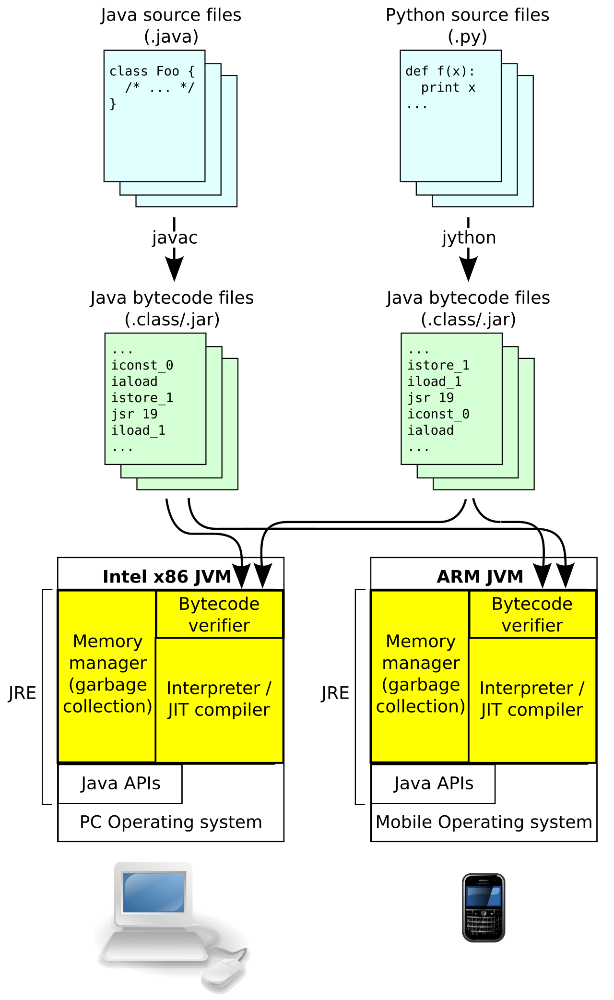
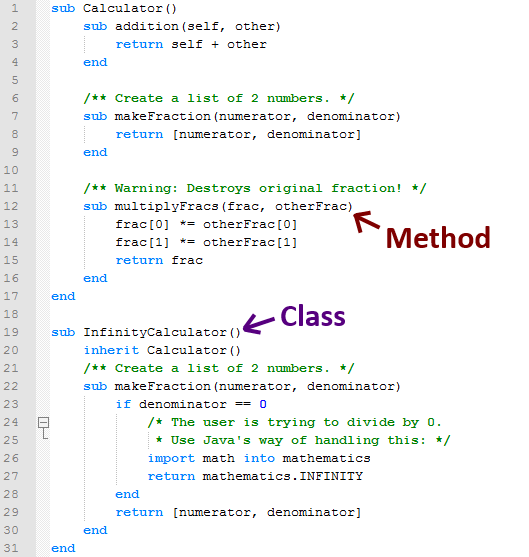
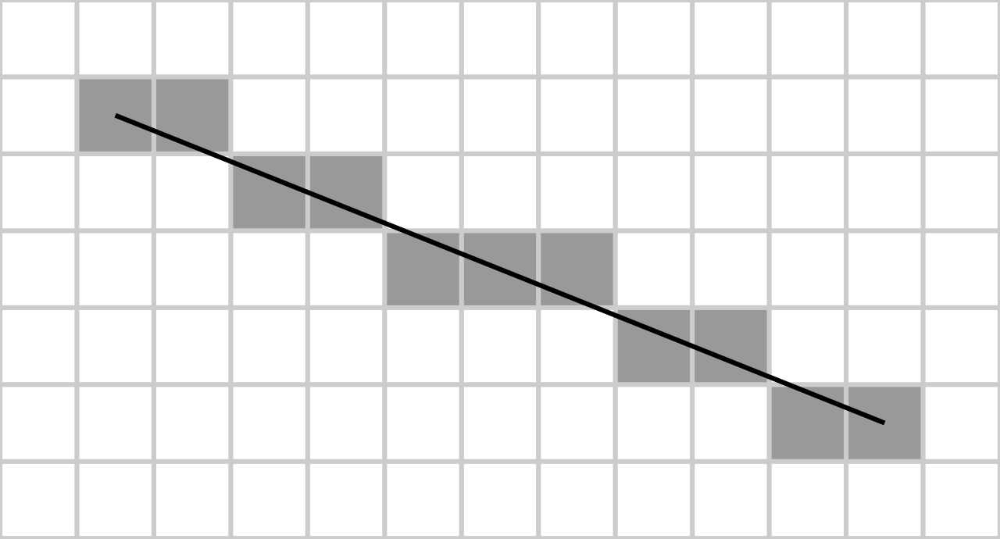
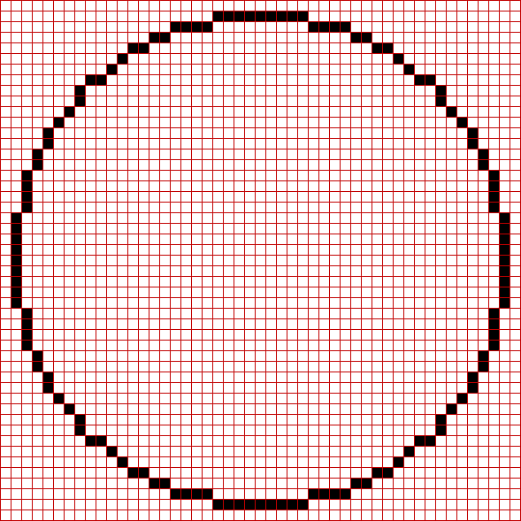
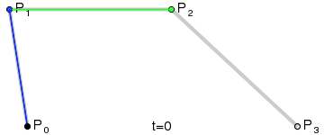

Object Oriented Programming & Computer Graphics
Complete Exam-Ready Study Guide for SPPU SE Computer Engineering (2024 Pattern - Revised) • Course Code: PCC-202-COM / PCC-202-CSE
In the SPPU 2024 Pattern paper, Questions 1–2 cover Unit I, Questions 3–4 cover Unit II, Questions 5–6 cover Unit III, Questions 7–8 cover Unit IV, and Questions 9–10 cover Unit V. Every unit has Exam Definitions (write these verbatim for full marks), Simple-Words Intuition, runnable Java / CG code, Step-by-step Solved Numericals, and Important SPPU Exam Q&A.
Unit I: Introduction to OOP Concepts and Control Structure
1.1 Programming Paradigms & Need for OOP
Exam Definition: A programming paradigm is a fundamental style or approach to structuring and organizing computer programs, defining how problems are modeled and solved in a programming language.
In Simple Words: Think of it like cooking styles. Just as Indian, Italian, and Chinese cuisines use different techniques to make a meal, different paradigms give us different ways to organize code.
| Paradigm | Core Idea | How It Works | Examples |
|---|---|---|---|
| Procedural | Step-by-step instructions (procedures/functions) | Data is global/shared and functions operate on it sequentially. Hard to scale for huge apps. | C, Pascal, Fortran |
| Object-Oriented (OOP) | Objects bundling data + methods | Models real-world entities. Data is protected inside objects and accessed via methods. | Java, C++, Python |
| Functional | Pure mathematical functions | Avoids changing state or mutable data; functions are first-class values. | Haskell, Lisp, Scala |
| Logic & Rule-Based | Facts and rules | You declare what is true (facts + rules), and the engine deduces answers. | Prolog, Datalog |
Need for Object-Oriented Programming: In large procedural programs (like a banking system with millions of lines), global data can be accidentally modified by any function, leading to bugs and tight coupling. OOP solves this by binding data and the functions that operate on it into secure, reusable units called objects.
1.2 Fundamentals of OOP & Java as an OOP Language
- Class: A blueprint or template that defines data members (fields) and methods. No memory is allocated for instances until an object is created.
- Object: A runtime instance of a class that has state (data), behavior (methods), and identity (memory address).
- Data Members & Methods: Data members (fields) store an object's attributes (e.g.,
balance), while methods define its behavior (e.g.,deposit()). - Messages: Objects communicate by sending messages to one another — i.e., calling a method on an object (e.g.,
acc.deposit(500)). - Namespaces: Named scopes (implemented via
packagein Java) that prevent naming conflicts between classes with the same name.
Exam Definition: Encapsulation is the mechanism of wrapping data (variables) and code acting on the data (methods) together as a single unit, restricting direct access via access modifiers (private).
In Simple Words: Like a medicine capsule — the powder (data) is sealed inside, and you only interact with the outer shell (public methods).
Exam Definition: Abstraction is the process of hiding complex internal implementation details and showing only the essential features of an object to the user.
In Simple Words: When you drive a car, you use the steering wheel and pedals without needing to know how fuel injection works inside the engine.
Exam Definition: Inheritance is the mechanism by which one class (subclass) acquires the properties and behaviors of another class (superclass), enabling hierarchical classification and code reuse.
In Simple Words: A child inherits traits from a parent and can also have its own unique skills.
Exam Definition: Polymorphism (“many forms”) allows a single interface, method name, or reference variable to exhibit different behaviors depending on the object or arguments.
In Simple Words: A single button “Play” plays a song in a music app, a video in a player, or a game in a console.
Benefits of OOP: Modularity, Code Reusability (via inheritance), Data Security (via encapsulation), Easy Maintenance, and Scalability for large software systems.
Java as an OOP Language: Java is platform-independent (“Write Once, Run Anywhere”), strongly typed, garbage-collected, secure (no raw pointers), and enforces OOP by requiring every executable unit to live inside a class.
1.3 Overview of Java Language, JVM & Memory Concepts
A standard Java source file follows a clean 5-part structure:
- Documentation Section: Comments (
/** ... */) describing author, date, and purpose. - Package Statement: Optional first code line declaring the namespace (e.g.,
package com.sppu.oop;). - Import Statements: Brings in classes from Java Class Libraries (e.g.,
import java.util.Scanner;). - Class Definition: Declares the class using
class ClassName { ... }. - Main Method Class: Entry point
public static void main(String[] args)where JVM starts execution.
Exam Definition: The JVM is an abstract computing machine that loads, verifies, and executes Java bytecode (.class files), translating it into native machine instructions for the host OS.
In Simple Words: Java compiles your .java code into a universal language called Bytecode (.class). Every OS (Windows, Linux, macOS) has its own JVM translator, so the exact same .class file runs everywhere.

Typical Java Development Environment & Memory Concepts:
- Compile & Run: Write
Hello.java→javac Hello.javaproducesHello.class(Bytecode) →java Hellolaunches the JVM. - Memory Areas:
- Stack Memory: Stores local primitive variables and method call frames (LIFO).
- Heap Memory: Stores all objects created with
newand their instance variables; managed by the Garbage Collector. - Method Area: Stores class metadata, static variables, and bytecode.
- Java Class Libraries (API): Pre-built packages like
java.lang(auto-imported:String,Math,System),java.util(Scanner,ArrayList), andjava.io(streams/files).
1.4 Data Types, Primitive vs Reference Types & Operators
| Feature | Primitive Types (8 types) | Reference Types |
|---|---|---|
| What it stores | Actual value directly in memory | Memory address (reference) pointing to an object on Heap |
| Examples | byte (1B), short (2B), int (4B), long (8B), float (4B), double (8B), char (2B), boolean (1 bit) |
Classes (String, Scanner), Arrays (int[]), Interfaces |
| Default value | 0, 0.0, false, '\u0000' (for fields) |
null |
Floating Point Numbers: Java uses IEEE 754 standard: float (32-bit single precision, suffix f like 3.14f) and double (64-bit double precision, default for decimals).
Operators & Expressions: Arithmetic (+ - * / %), Relational (== != < > <= >=), Logical (&& || !), Bitwise (& | ^ ~ << >>), Assignment (= += -=), Unary (++ --), and Ternary (cond ? a : b).
1.5 Control Statements in Java
Java provides Selection statements (if, if-else, nested if-else, switch), Iteration statements (while, do-while, for, for-each), and Jump statements (break exits a loop/switch; continue skips the current iteration).
/**
* Documentation Section: Control Statements Demo
* Demonstrates if-else, nested if-else, for, while, do-while, for-each, break, continue
*/
package unit1;
import java.util.Scanner;
public class ControlDemo {
public static void main(String[] args) {
int marks = 78;
// 1. Nested if-else
if (marks >= 75) {
System.out.println("Grade: Distinction");
} else if (marks >= 60) {
System.out.println("Grade: First Class");
} else {
System.out.println("Grade: Pass/Fail");
}
// 2. for loop with continue and break
System.out.print("Odd numbers up to 7: ");
for (int i = 1; i <= 10; i++) {
if (i % 2 == 0) continue; // skip even
if (i > 7) break; // stop after 7
System.out.print(i + " ");
}
System.out.println();
// 3. while & do-while
int count = 3;
while (count > 0) {
System.out.print(count + " ");
count--;
}
int x = 1;
do {
System.out.println("\nDo-while executes at least once: x = " + x);
x++;
} while (x <= 1);
// 4. for-each loop
String[] langs = {"Java", "C++", "Python"};
for (String lang : langs) {
System.out.println("Language: " + lang);
}
}
}1.6 Case Study & Important SPPU Exam Questions
Case Study: Java vs C++ vs Python (OOP Features)
| Feature | Java | C++ | Python |
|---|---|---|---|
| Paradigm | Purely class-based OOP | Multi-paradigm (Procedural + OOP) | Multi-paradigm (OOP + Functional) |
| Platform Independence | Bytecode + JVM (WORA) | Compiles to OS-specific native binary | Interpreted bytecode (PVM) |
| Memory Management | Automatic Garbage Collection | Manual (new / delete) | Automatic Garbage Collection |
| Multiple Inheritance | Via Interfaces only | Supported directly with classes | Supported directly with classes |
- Definition (1M): JVM is an abstract machine that provides a runtime environment to execute Java bytecode.
- Compilation (1M):
javaccompiles.javasource code into OS-neutral Bytecode (.class), not machine code. - Execution (2M): Each OS has its own JVM implementation (Windows JVM, Linux JVM). The Class Loader loads bytecode, Bytecode Verifier checks safety, and JIT/Interpreter converts it into native machine instructions.
- Conclusion (1M): Because bytecode is identical across platforms, Java achieves Write Once, Run Anywhere (WORA).
Define paradigm (1M), then briefly explain with 1 example each (3M): (1) Procedural (C — functions & sequential steps), (2) Object-Oriented (Java — classes & objects), (3) Functional (Haskell — pure functions, no mutable state), (4) Logic & Rule-Based (Prolog — facts & inference rules).
Unit II: Introduction to Classes and Objects and Arrays
2.1 Defining a Class, Objects, Argument Passing & Getters/Setters
Exam Definition: A class is a user-defined blueprint or prototype from which objects are created, encapsulating fields and methods. An object is a concrete instance of a class allocated on the heap using the new operator.
In Simple Words: A class is like an architect's house plan; an object is an actual house built from that plan. You can build 10 houses from 1 plan.
- Field & Method Declaration: Fields are variables inside a class; methods define actions (with return type, name, and parameter list).
- Instantiating & Accessing Members:
Student s1 = new Student();allocates memory on the heap. Access members with the dot operator:s1.setName("Asha");. - Assigning Object Reference Variables:
Student s2 = s1;does not copy the object; boths1ands2point to the exact same object in memory. - Argument Passing & Returning Objects: Java passes everything by value. For primitives, a copy of the value is passed. For objects, a copy of the reference is passed, so modifying the object's fields inside the method affects the original object. Methods can also return an object reference (e.g.,
Box doubleSize() { return new Box(w*2); }). - Getter (Accessor) & Setter (Mutator) Methods: Used to safely read and update
privatefields while enforcing validation (encapsulation).
2.2 Constructors, this Keyword & static Members
Exam Definition: A constructor is a special member method having the exact same name as the class and no return type, automatically invoked when an object is created to initialize its state.
In Simple Words: It is the automatic setup routine that runs the moment a new object is born.
- Default Constructor: Takes no parameters. If you write none, Java provides one automatically.
- Parameterized Constructor: Accepts arguments to initialize fields with custom values at creation time.
thisKeyword: Refers to the current invoking object. Resolves naming conflicts between instance fields and parameters (this.id = id;) and can call another constructor viathis(...).staticVariables & Methods: Belong to the class rather than any individual object. Shared across all instances (e.g.,static int count = 0;). Static methods can be called viaClassName.method()without creating an object, and cannot directly access non-static instance members.
2.3 Method Overloading, Scope & Java API Packages
Exam Definition: Method overloading is a feature in which a class has multiple methods with the same name but different parameter lists (number, type, or order of parameters).
In Simple Words: Like a Swiss Army knife — one tool name (area) handles both a square (1 side) and a rectangle (length & breadth).
Scope of Declaration: Block scope (variables inside { }), Method/Local scope (parameters and local variables), and Class scope (fields accessible throughout the class).
Java API Packages: Built-in folders of classes such as java.util, java.io, java.math. Imported using import java.util.Scanner; or import java.util.*;.
// Complete Demo: Class, Getters/Setters, Constructors, this, static, Overloading, Object Passing
package unit2;
class Box {
private double width, height;
private static int boxCount = 0; // static field shared by all Box objects
// Default constructor
Box() {
this(1.0, 1.0); // calls parameterized constructor using 'this'
}
// Parameterized constructor
Box(double width, double height) {
this.width = width;
this.height = height;
boxCount++;
}
// Getters & Setters (Accessors & Mutators)
public double getWidth() { return width; }
public void setWidth(double width) {
if (width > 0) this.width = width;
}
// Method Overloading: area(side) vs area(w, h)
public double area(double side) { return side * side; }
public double area(double w, double h) { return w * h; }
// Object as parameter & returning an object
public Box combine(Box other) {
return new Box(this.width + other.width, this.height + other.height);
}
public static int getBoxCount() { return boxCount; }
}
public class ClassDemo {
public static void main(String[] args) {
Box b1 = new Box(4, 5);
Box b2 = new Box();
Box b3 = b1.combine(b2);
System.out.println("Square area: " + b1.area(5));
System.out.println("Rect area: " + b1.area(4, 5));
System.out.println("Combined width: " + b3.getWidth());
System.out.println("Total boxes created: " + Box.getBoxCount());
}
}2.4 Arrays, Multidimensional Arrays, Varargs & Command-Line Arguments
- 1-D Array:
int[] arr = new int[5];orint[] arr = {10, 20, 30};. Arrays are objects in Java with a.lengthproperty. - Passing Arrays to Methods: Passes the array reference, so the method can read or modify the original array elements.
- 2-D / Multidimensional Arrays:
int[][] mat = new int[2][3];(an array of arrays; rows can even have different lengths, called jagged arrays). - Variable-Length Argument Lists (Varargs):
int sum(int... nums)lets a method accept 0 or more arguments of the same type, treated internally as an array. - Command-Line Arguments: Strings passed when running
java MyApp arg1 arg2are received inmain(String[] args)asargs[0],args[1].
public class ArrayAndVarargsDemo {
// Passing 1D array to method
static int arraySum(int[] a) {
int s = 0;
for (int val : a) s += val;
return s;
}
// Varargs method
static double average(double... values) {
if (values.length == 0) return 0;
double total = 0;
for (double v : values) total += v;
return total / values.length;
}
public static void main(String[] args) {
int[] nums = {10, 20, 30};
System.out.println("Array sum: " + arraySum(nums));
int[][] matrix = {{1, 2}, {3, 4}};
System.out.println("Matrix[1][0]: " + matrix[1][0]);
System.out.println("Varargs avg: " + average(10, 20, 30, 40));
if (args.length > 0) {
System.out.println("First CLI arg: " + args[0]);
}
}
}2.5 Managing I/O: Streams, Console Input/Output & PrintWriter
Java performs I/O through Streams (a continuous flow of data from source to destination):
| Stream Type | Unit of Data | Base Classes | Typical Use |
|---|---|---|---|
| Byte Streams | 8-bit bytes | InputStream, OutputStream | Binary files (images, audio, PDFs) |
| Character Streams | 16-bit Unicode chars | Reader, Writer | Text files, console I/O (BufferedReader, PrintWriter) |
- Predefined Streams:
System.in(standard input, keyboard),System.out(standard output, console),System.err(standard error). - Reading Console Input: Either
Scanner sc = new Scanner(System.in);(easy token parsing) orBufferedReader br = new BufferedReader(new InputStreamReader(System.in));(fast line reading). PrintWriterClass: Character-based output class recommended for real-world internationalization:PrintWriter pw = new PrintWriter(System.out, true); pw.println("Hello!");.
2.6 Case Study & Important SPPU Exam Questions
// Case Study: Interactive Banking System using Class, Objects & Array of Objects
import java.util.Scanner;
class BankAccount {
private int accNo;
private String holder;
private double balance;
BankAccount(int accNo, String holder, double balance) {
this.accNo = accNo;
this.holder = holder;
this.balance = balance;
}
public void deposit(double amt) { if (amt > 0) balance += amt; }
public void display() {
System.out.println(accNo + " | " + holder + " | Rs. " + balance);
}
}
public class BankSystem {
public static void main(String[] args) {
BankAccount[] accounts = new BankAccount[2]; // Array of objects
accounts[0] = new BankAccount(101, "Riya", 5000);
accounts[1] = new BankAccount(102, "Arjun", 8500);
accounts[0].deposit(1500);
for (BankAccount b : accounts) b.display();
}
}Define method overloading (2M) — same method name in the same class with different parameter count/type (resolved at compile time). Provide the area(double side) and area(double l, double b) Java class & main() output (3M).
Explain contiguous indexed collection (1M), show 1-D syntax int[] a = new int[5]; and 2-D syntax int[][] m = {{1,2},{3,4}}; (2M), and demonstrate passing a into a method static int sum(int[] arr) (2M).
Unit III: Inheritance, Polymorphism, Exception Handling & Multithreading
3.1 Inheritance, protected Members, Subclass Constructors & Object Class
Exam Definition: Inheritance is an OOP mechanism where a subclass (derived/child class) acquires the non-private fields and methods of a superclass (base/parent class) using the extends keyword.
In Simple Words: A SavingsAccount is a BankAccount — it automatically gets balance and deposit() without rewriting them, and adds interestRate.
protectedAccess Specifier: Accessible within the same package AND in subclasses in other packages (unlike default/package-private).- Types of Inheritance in Java:
- Single:
B extends A - Multilevel:
C extends B,B extends A - Hierarchical:
B extends AandC extends A - Note: Multiple inheritance with classes is not allowed in Java (avoids the Diamond Problem ambiguity); it is achieved using Interfaces.
- Single:
- Constructors in Subclasses (
super()): Java always executes the superclass constructor before the subclass constructor. Usesuper(args)as the first line of the subclass constructor to pass arguments to the parent constructor. java.lang.ObjectClass: The root of all Java classes. Key inherited methods:toString(),equals(Object o),hashCode(), andgetClass().

3.2 Polymorphism, Dynamic Binding, Abstract Classes, final & Interfaces
Exam Definition: Dynamic method dispatch (dynamic binding) is the mechanism by which a call to an overridden method is resolved at runtime rather than compile time, based on the actual object type referenced by a superclass reference variable.
In Simple Words: You hold a generic Shape s remote control; if it points to a Circle object, s.draw() draws a circle; if it points to a Rectangle, s.draw() draws a rectangle.
finalKeyword: Afinalvariable is a constant; afinalmethod cannot be overridden; afinalclass (e.g.,String) cannot be inherited.
| Feature | Abstract Class (abstract class) | Interface (interface) |
|---|---|---|
| Methods | Can have both abstract and concrete (implemented) methods | All methods are public abstract by default (plus default/static since Java 8) |
| Fields | Can have instance (non-final) variables | Only public static final constants |
| Constructors | Yes, can have constructors | No constructors |
| Multiple Inheritance | A class can extends only one abstract class | A class can implements multiple interfaces |
// Dynamic Method Dispatch + Abstract Class + Interface Demo
interface Printable {
void print(); // implicitly public abstract
}
abstract class Shape {
abstract double area(); // abstract method
void display() { System.out.println("Area = " + area()); } // concrete method
}
class Circle extends Shape implements Printable {
double r;
Circle(double r) { this.r = r; }
@Override double area() { return Math.PI * r * r; }
@Override public void print() { System.out.println("Printing Circle"); }
}
class Rectangle extends Shape {
double l, b;
Rectangle(double l, double b) { this.l = l; this.b = b; }
@Override double area() { return l * b; }
}
public class PolymorphismDemo {
public static void main(String[] args) {
Shape s; // Superclass reference
s = new Circle(5);
s.display(); // Calls Circle.area() at runtime
s = new Rectangle(4, 6);
s.display(); // Calls Rectangle.area() at runtime
}
}3.3 Exception Handling in Java
Exam Definition: An exception is an abnormal runtime event that disrupts the normal flow of a program. Exception handling uses try, catch, finally, throw, and throws to handle runtime errors gracefully without crashing.
In Simple Words: Like a safety net under a trapeze artist — if something goes wrong in the try block, the catch block catches it safely.
- Exception Types: All exceptions inherit from
Throwable→Error(serious JVM failures likeOutOfMemoryError) andException:- Checked Exceptions (Compile-time): Must be caught or declared with
throws(e.g.,IOException,SQLException). - Unchecked Exceptions (Runtime): Subclasses of
RuntimeException(e.g.,ArithmeticException,NullPointerException,ArrayIndexOutOfBoundsException).
- Checked Exceptions (Compile-time): Must be caught or declared with
- Five Keywords:
try(risky code),catch(handler; can have multiple catches from specific to general, or nestedtry),finally(always executes for cleanup),throw(explicitly throws an exception object),throws(declares exceptions a method might pass to its caller).
// Multiple catch, nested try, throw, throws, and finally
class InsufficientFundsException extends Exception {
InsufficientFundsException(String msg) { super(msg); }
}
public class ExceptionDemo {
static void withdraw(double bal, double amt) throws InsufficientFundsException {
if (amt > bal) throw new InsufficientFundsException("Low balance!");
System.out.println("Withdrawn: Rs. " + amt);
}
public static void main(String[] args) {
try {
int[] arr = {10, 20};
try {
int x = arr[5] / 0;
} catch (ArrayIndexOutOfBoundsException e) {
System.out.println("Inner catch: Invalid index!");
}
withdraw(500, 1000);
} catch (InsufficientFundsException e) {
System.out.println("Caught custom exception: " + e.getMessage());
} catch (Exception e) {
System.out.println("General catch: " + e);
} finally {
System.out.println("Finally block: Closing resources.");
}
}
}3.4 Multithreading & Java Thread Lifecycle
Java Thread Model & Main Thread: A thread is a lightweight sub-process (smallest unit of execution) sharing the same heap memory. When a Java program starts, the JVM automatically creates the Main Thread to execute main().
- Two Ways to Create a Thread:
- Extend
Threadclass: Overriderun()and callt.start(). - Implement
Runnableinterface (Preferred): Pass instance tonew Thread(runnable).start()— allows extending another class too.
- Extend
- Important Methods:
start()(creates OS thread & callsrun()),Thread.sleep(ms),t.join()(wait for thread to finish).
// Creating multiple threads using Runnable
class Task implements Runnable {
private String name;
Task(String name) { this.name = name; }
public void run() {
for (int i = 1; i <= 3; i++) {
System.out.println(name + " step " + i);
try { Thread.sleep(200); } catch (InterruptedException e) {}
}
}
}
public class MultiThreadDemo {
public static void main(String[] args) throws InterruptedException {
Thread t1 = new Thread(new Task("Download"));
Thread t2 = new Thread(new Task("Render"));
t1.start();
t2.start();
t1.join();
t2.join();
System.out.println("Main thread: All tasks finished!");
}
}3.5 Case Study & Important SPPU Exam Questions
Case Study: Online Banking System (Inheritance + Exceptions + Multithreading)
A base Account class is extended by SavingsAccount and CurrentAccount (Inheritance & Dynamic Dispatch for calculateInterest()). Withdrawals validate balance and throw a custom InsufficientBalanceException (Exception Handling). Concurrent fund transfers run on separate Thread instances with synchronized balance updates (Multithreading).
Define abstract class/method (2M), then give the 4-point comparison table (concrete vs abstract methods, variables vs constants, constructors, single vs multiple inheritance) (2M).
Give 1-line role of each of the 5 keywords (2.5M) and a short, clean Java snippet showing throws in a method signature, throw inside it, and try-catch-finally in main() (2.5M).
Unit IV: Graphics Primitives, Scan Conversion, Windowing & Clipping
4.1 Graphics Primitives, Display Devices & Applications
Exam Definition: A pixel (picture element) is the smallest addressable screen element. Resolution is the maximum number of points (pixels) that can be displayed without overlap on a screen (e.g., $1920 \times 1080$).
In Simple Words: A pixel is a single tiny colored tile in a mosaic; resolution is how many tiles wide and tall the mosaic is.
Exam Definition: Aspect ratio is the ratio of horizontal points to vertical points needed to produce equal-length lines (e.g., $16:9$ or $4:3$). A frame buffer (refresh buffer) is a block of video memory storing intensity/color values for every pixel.
In Simple Words: Aspect ratio is screen shape (width vs height); frame buffer is the digital canvas holding what is currently on screen.
Display Devices:
- Raster-Scan CRT: Electron beam sweeps row-by-row (scan lines) from top to bottom. Stores image in a frame buffer. Great for realistic shaded images and photos.
- Random-Scan (Vector) CRT: Electron beam draws lines directly from point to point like a pen plotter. Sharp lines, no jagged edges, but cannot display realistic shaded scenes.
- Flat-Panel Displays (LCD / LED / OLED): Thin, low-power matrix displays using liquid crystals or light-emitting diodes.
Applications of Computer Graphics: CAD/CAM (AutoCAD), Medical Imaging (MRI/CT 3D), Entertainment & Gaming, Data Visualization, Virtual Reality & Simulation, and GUI/OS interfaces.
4.2 Line Drawing Algorithms: DDA & Bresenham
Scan Conversion (Rasterization) is converting continuous geometric objects (lines, circles) into discrete pixels on a grid.
1. Digital Differential Analyzer (DDA) Line Algorithm
Given endpoints $(x_1, y_1)$ and $(x_2, y_2)$: $\Delta x = x_2 - x_1$, $\Delta y = y_2 - y_1$, and $\text{steps} = \max(|\Delta x|, |\Delta y|)$.
$$x_{\text{inc}} = \frac{\Delta x}{\text{steps}}, \quad y_{\text{inc}} = \frac{\Delta y}{\text{steps}}$$At each step $k = 1 \dots \text{steps}$: $x_{k+1} = x_k + x_{\text{inc}}$, $y_{k+1} = y_k + y_{\text{inc}}$, plot $(\text{round}(x), \text{round}(y))$.
Solved Numerical (SPPU Oct 2025): Rasterize line from $A(-2, -1)$ to $B(6, 3)$ using DDA
$\Delta x = 6 - (-2) = 8$, $\Delta y = 3 - (-1) = 4$. $\text{steps} = \max(8, 4) = 8$.
$x_{\text{inc}} = 8/8 = 1.0$, $y_{\text{inc}} = 4/8 = 0.5$.
| Step $k$ | $x$ | $y$ | Plot $(\text{round}(x), \text{round}(y))$ |
|---|---|---|---|
| 0 | $-2.0$ | $-1.0$ | $(-2, -1)$ |
| 1 | $-1.0$ | $-0.5$ | $(-1, 0)$ |
| 2 | $0.0$ | $0.0$ | $(0, 0)$ |
| 3 | $1.0$ | $0.5$ | $(1, 1)$ |
| 4 | $2.0$ | $1.0$ | $(2, 1)$ |
| 5 | $3.0$ | $1.5$ | $(3, 2)$ |
| 6 | $4.0$ | $2.0$ | $(4, 2)$ |
| 7 | $5.0$ | $2.5$ | $(5, 3)$ |
| 8 | $6.0$ | $3.0$ | $(6, 3)$ |
2. Bresenham's Line Drawing Algorithm
DDA uses slow floating-point addition and rounding. Bresenham's algorithm uses only fast integer arithmetic! For slope $0 \le m \le 1$:
Initial decision parameter: $p_0 = 2\Delta y - \Delta x$.
- If $p_k < 0$: next pixel is $(x_k + 1, y_k)$ and $p_{k+1} = p_k + 2\Delta y$.
- If $p_k \ge 0$: next pixel is $(x_k + 1, y_k + 1)$ and $p_{k+1} = p_k + 2\Delta y - 2\Delta x$.

// Java Implementation: Bresenham Line Algorithm (0 <= slope <= 1)
public class BresenhamLine {
public static void drawLine(int x1, int y1, int x2, int y2) {
int dx = Math.abs(x2 - x1);
int dy = Math.abs(y2 - y1);
int p = 2 * dy - dx;
int x = x1, y = y1;
System.out.println("Plot: (" + x + ", " + y + ")");
while (x < x2) {
x++;
if (p < 0) {
p += 2 * dy;
} else {
y++;
p += 2 * (dy - dx);
}
System.out.println("Plot: (" + x + ", " + y + ")");
}
}
public static void main(String[] args) { drawLine(2, 2, 8, 5); }
}4.3 Circle Drawing Algorithms: DDA, Bresenham & Midpoint
Circles have 8-way symmetry: if $(x, y)$ is on a circle centered at $(0, 0)$, then $(\pm x, \pm y)$ and $(\pm y, \pm x)$ are also on it! So we only compute the first octant ($x = 0$ to $x = y$).
- DDA Circle: Uses small angular steps $\Delta \theta = 1/r$ or parametric equations $x_{n+1} = x_n + \varepsilon y_n$, $y_{n+1} = y_n - \varepsilon x_{n+1}$ (floating-point heavy).
- Bresenham's Circle: Uses integer decision parameter $d_0 = 3 - 2r$; if $d < 0$, $d = d + 4x + 6$; else $d = d + 4(x - y) + 10$ and $y$ decrements.
- Midpoint Circle Algorithm: Tests the midpoint $(x_k + 1, y_k - \frac{1}{2})$ against $f(x, y) = x^2 + y^2 - r^2$.
Start at $(0, r)$ with initial decision parameter: $p_0 = 1 - r$.
- If $p_k < 0$: next point is $(x_k + 1, y_k)$, and $p_{k+1} = p_k + 2x_{k+1} + 1$.
- If $p_k \ge 0$: next point is $(x_k + 1, y_k - 1)$, and $p_{k+1} = p_k + 2x_{k+1} + 1 - 2y_{k+1}$.
Repeat while $x < y$, plotting all 8 symmetric points at each step.
Solved Numerical: Midpoint Circle for $r = 10$ centered at $(0, 0)$
Start: $(x_0, y_0) = (0, 10)$, $p_0 = 1 - 10 = -9$.
| $k$ | $p_k$ | $(x_{k+1}, y_{k+1})$ | $2x_{k+1}$ | $2y_{k+1}$ |
|---|---|---|---|---|
| 0 | $-9 < 0$ | $(1, 10)$ | 2 | 20 |
| 1 | $-9 + 2 + 1 = -6 < 0$ | $(2, 10)$ | 4 | 20 |
| 2 | $-6 + 4 + 1 = -1 < 0$ | $(3, 10)$ | 6 | 20 |
| 3 | $-1 + 6 + 1 = 6 \ge 0$ | $(4, 9)$ | 8 | 18 |
| 4 | $6 + 8 + 1 - 18 = -3 < 0$ | $(5, 9)$ | 10 | 18 |
| 5 | $-3 + 10 + 1 = 8 \ge 0$ | $(6, 8)$ | 12 | 16 |
| 6 | $8 + 12 + 1 - 16 = 5 \ge 0$ | $(7, 7)$ | 14 | 14 (Stop, $x \ge y$) |

4.4 Polygons, Inside-Outside Test & Polygon Filling
- Types of Polygons:
- Convex: All interior angles $\le 180^\circ$; any line joining two interior points lies completely inside.
- Concave: At least one interior angle $> 180^\circ$.
- Complex: Edges intersect/cross each other.
- Inside-Outside Test:
- Even-Odd (Parity) Rule: Cast a ray from point $P$ to infinity. Count edge intersections: Odd = Inside, Even = Outside.
- Winding Number Rule: Assign $+1$ or $-1$ to directed edges crossing the ray. Non-zero sum = Inside.
| Algorithm | How It Works | Pros / Cons |
|---|---|---|
| Flood Fill | Starts at interior seed pixel and replaces all connected pixels of oldColor with newColor (4-connected or 8-connected). | Works for any boundary color; uses recursion stack (memory heavy). |
| Boundary (Seed) Fill | Spreads from seed until it hits a specific boundaryColor. | Simple, but fails if interior already contains boundary color. |
| Scan Line Fill | Intersects horizontal scan lines with polygon edges, sorts $x$-intersections, and fills between odd-even pairs. | Fastest for large polygons; uses Active Edge Table (AET), no stack overflow. |
4.5 Windowing & 2D Clipping Algorithms
Windowing selects a rectangular region in world coordinates (the Window) and maps it to a screen area (the Viewport). Clipping removes portions of graphics outside the window.
1. Cohen-Sutherland Line Clipping Algorithm
Divides 2D space into 9 regions using a 4-bit region code (TBRL: Top, Bottom, Right, Left):
- Bit 1 (MSB, Top): $y > y_{\max}$, Bit 2 (Bottom): $y < y_{\min}$, Bit 3 (Right): $x > x_{\max}$, Bit 4 (LSB, Left): $x < x_{\min}$.
- Trivial Accept: $\text{code}(P_1) = 0000$ AND $\text{code}(P_2) = 0000$.
- Trivial Reject: $(\text{code}(P_1) \text{ \& } \text{code}(P_2)) \neq 0000$ (both outside same edge).
- Partial / Clip: Otherwise, find intersection with window edge using slope $m = \frac{y_2 - y_1}{x_2 - x_1}$: $y = y_1 + m(x_{\text{edge}} - x_1)$ and $x = x_1 + \frac{y_{\text{edge}} - y_1}{m}$.
2. Sutherland-Hodgman Polygon Clipping Algorithm
Clips a polygon sequentially against 4 infinite clip boundaries (Left → Right → Bottom → Top). For each directed edge from $V_1$ to $V_2$:
- Out → In: Output intersection $I$ and $V_2$.
- In → In: Output $V_2$.
- In → Out: Output intersection $I$.
- Out → Out: Output nothing.
4.6 Case Studies & Important SPPU Exam Questions
Case Studies
- Real-Time Map Rendering in GPS Navigation: Roads are rasterized as polylines using Bresenham's integer line algorithm (ultra-fast on embedded chips), and roundabouts/radar radii use Midpoint Circle.
- 3D Pipeline & Polygonal Modeling: Objects are represented as triangle meshes; clipped against the view frustum before scan-line rasterization.
State $f(x, y) = x^2 + y^2 - r^2$ (1M), explain 8-way symmetry (1M), derive decision parameter $d_0 = 3 - 2r$ and update rules (2M), and write the loop steps (1M).
Explain Sorted Edge Table / Active Edge Table + parity toggle filling (3M), followed by the comparison table on speed, memory/recursion, and boundary dependency (2M).
Unit V: 2D, 3D Transformations and Projections
5.1 2D Transformations & Homogeneous Coordinates
Exam Definition: Homogeneous coordinates represent a 2D point $(x, y)$ as a 3-element vector $(x, y, 1)$ (or $(X, Y, W)$ where $x = X/W, y = Y/W$) so that translation, scaling, rotation, and shear can all be expressed uniformly as $3 \times 3$ matrix multiplications.
In Simple Words: Adding a dummy 1 at the end turns addition (translation) into matrix multiplication, letting us chain multiple transformations into a single composite matrix.
Rotation About an Arbitrary Pivot Point $(x_f, y_f)$
Standard $R(\theta)$ rotates around the origin $(0,0)$. To rotate around an arbitrary pivot $(x_f, y_f)$ by angle $\theta$, compose three steps:
- Translate pivot to origin: $T(-x_f, -y_f)$
- Rotate by $\theta$ around origin: $R(\theta)$
- Translate back to $(x_f, y_f)$: $T(x_f, y_f)$
Solved Numerical 1 (SPPU Oct 2025, 4M): Perform X-Shear on triangle $A(2,1), B(4,3), C(2,3)$ with $sh_x = 2$
Using $x' = x + sh_x \cdot y$ and $y' = y$:
$$P' = \begin{bmatrix} 1 & 2 & 0 \\ 0 & 1 & 0 \\ 0 & 0 & 1 \end{bmatrix} \begin{bmatrix} 2 & 4 & 2 \\ 1 & 3 & 3 \\ 1 & 1 & 1 \end{bmatrix} = \begin{bmatrix} 2+2(1) & 4+2(3) & 2+2(3) \\ 1 & 3 & 3 \\ 1 & 1 & 1 \end{bmatrix} = \begin{bmatrix} 4 & 10 & 8 \\ 1 & 3 & 3 \\ 1 & 1 & 1 \end{bmatrix}$$Transformed Triangle: $A'(4, 1)$, $B'(10, 3)$, $C'(8, 3)$.
Solved Numerical 2: Rotate point $P(4, 2)$ by $90^\circ$ CCW about pivot $(1, 1)$
- Translate by $(-1, -1)$: $(4-1, 2-1) = (3, 1)$.
- Rotate by $90^\circ$ ($\cos 90^\circ = 0, \sin 90^\circ = 1$): $(-y, x) = (-1, 3)$.
- Translate back by $(+1, +1)$: $(-1+1, 3+1) = (0, 4)$.
Result: $P'(0, 4)$.
5.2 3D Transformations & Rotation About an Arbitrary Axis
In 3D, points use $4$-element homogeneous vectors $(x, y, z, 1)^T$ and $4 \times 4$ matrices:
3D Z-Shear: $x' = x + sh_x \cdot z$, $y' = y + sh_y \cdot z$, $z' = z$.
Rotation About an Arbitrary Axis in 3D (5-Step Pipeline)
To rotate by $\theta$ around an arbitrary axis passing through $P_1(x_1, y_1, z_1)$ and $P_2(x_2, y_2, z_2)$:
- Translate $P_1$ to origin: $T(-x_1, -y_1, -z_1)$.
- Rotate around X-axis by $\alpha$ to bring axis into $xz$-plane: $R_x(\alpha)$.
- Rotate around Y-axis by $-\beta$ to align axis with $+Z$-axis: $R_y(-\beta)$.
- Rotate around Z-axis by desired angle $\theta$: $R_z(\theta)$.
- Apply inverse transformations in reverse order: $T(x_1, y_1, z_1) \cdot R_x(-\alpha) \cdot R_y(\beta)$.
5.3 Parallel & Perspective Projections
Projection maps 3D world coordinates $(x, y, z)$ onto a 2D view plane.
| Projection Type | Projectors & Angle | Key Characteristics |
|---|---|---|
| Orthographic (Isometric, Dimetric, Trimetric) | Parallel projectors perpendicular ($90^\circ$) to view plane | Preserves true parallel lines; Isometric foreshortens all 3 axes equally ($120^\circ$ apart); Dimetric has 2 equal axes; Trimetric has 3 unequal axes. |
| Oblique: Cavalier | Parallel projectors at $45^\circ$ ($\tan\alpha = 1$) | Receding depth lines drawn at full length ($l = 1$). Looks slightly stretched. |
| Oblique: Cabinet | Parallel projectors at $63.4^\circ$ ($\tan\alpha = 2$) | Receding depth lines drawn at half length ($l = 0.5$). Looks more realistic. |
| Perspective (1, 2, 3-Point) | Projectors converge at finite Center of Projection (COP) | Objects shrink with distance (perspective foreshortening). 1-pt (1 axis cuts plane), 2-pt (2 axes), 3-pt (all 3 axes cut view plane). |
5.4 Parametric Curves: Bezier & B-Spline
A Cubic Bezier Curve uses 4 control points $P_0, P_1, P_2, P_3$ and Bernstein blending polynomials for $t \in [0, 1]$:
B-Spline Curves: Generalize Bezier curves by providing local control (moving one control point only affects a local segment) and allow choosing the curve degree independent of the number of control points.

5.5 Case Studies & Important SPPU Exam Questions
Case Studies
- Affine Transformations Vlab: Interactive simulation (IIIT-H Virtual Labs) demonstrating how matrix order ($T \cdot R$ vs $R \cdot T$) changes the final object position.
- Image Augmentation in Deep Learning: Training CNNs uses 2D affine transformations (random rotation, scaling, horizontal flip, shear) on training images to prevent overfitting.
Define oblique projection (parallel projectors hit view plane at $\neq 90^\circ$) (1M). Explain Cavalier ($\alpha=45^\circ$, foreshortening factor $l=1$, full depth) (1.5M) and Cabinet ($\alpha=63.4^\circ$, $l=0.5$, half depth for realism) (1.5M).
State the 5 composite transformation steps clearly with matrix notation $M = T(P_1) R_x(-\alpha) R_y(\beta) R_z(\theta) R_y(-\beta) R_x(\alpha) T(-P_1)$ (5M).
References & Image Credits
Official SPPU 2024 Pattern Text Books
- E. Balaguruswamy, Programming with Java: A Primer, 7th Edition, McGraw Hill Education, 2023.
- Herbert Schildt, Java: The Complete Reference, 13th Edition, McGraw-Hill Education, 2021.
- S. Harrington, Computer Graphics, 2nd Edition, McGraw-Hill Publications, 1987 (ISBN 0-07-100472-6).
- Donald D. Hearn and M. Pauline Baker, Computer Graphics with OpenGL, 4th Edition (ISBN 978-0136053583).
Official SPPU Reference Books
- Paul Deitel and Harvey Deitel, Java: How to Program, 9th Edition, Pearson Publication.
- Cay S. Horstmann, Core Java – Vol. I: Fundamentals, 12th Edition, Pearson Education, 2023.
- Dr. Samit Bhattacharya, Computer Graphics, Oxford University Press (ISBN 978-0-19-809619-1).
- David F. Rogers, Procedural Elements for Computer Graphics, 2nd Edition, Tata McGraw-Hill, 2001.
MOOC / NPTEL & E-Books
- NPTEL Course 1: https://archive.nptel.ac.in/courses/106/103/106103224/
- NPTEL Course 2: https://archive.nptel.ac.in/courses/106/102/106102065/
- NPTEL Course 3: https://nptel.ac.in/courses/106106090
- E-Book (IITG): Computer Graphics PDF by Prof. Samit Bhattacharya
- Open Textbook: Introduction to Computer Graphics (Open UMN)
Wikimedia Commons Image Credits (assets/manifest.json)
| File | Title | Author / Artist | License | Source URL |
|---|---|---|---|---|
assets/jvm_architecture.png | jvm architecture | Wikimedia Commons Contributor | CC BY-SA / Public Domain | commons.wikimedia.org |
assets/oop_inheritance.png | oop inheritance | Wikimedia Commons Contributor | CC BY-SA / Public Domain | commons.wikimedia.org |
assets/bresenham_line.png | Bresenham.svg | Crotalus horridus | Public domain | File:Bresenham.svg |
assets/midpoint_circle.png | Midpoint circle algorithm, radius 23.png | Psiĥedelisto | CC0 | File:Midpoint_circle_algorithm,_radius_23.png |
assets/cohen_sutherland.png | Cohen sutherland kody.svg | Wojciech mula / Krzysztof Zajączkowski | Public domain | File:Cohen_sutherland_kody.svg |
assets/bezier_curve.png | Bézier 3 big.gif | Phil Tregoning | Public domain | File:B%C3%A9zier_3_big.gif |